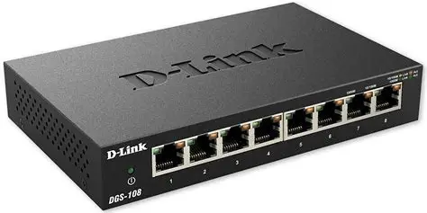

Important components include Routers, Switches, Network Interface Cards (NICs), Access Points, and Cables.
A router is a device that forwards data packets between computer networks, enabling communication and connectivity.
A switch is a networking device that connects devices within a network and uses packet switching to forward data.
